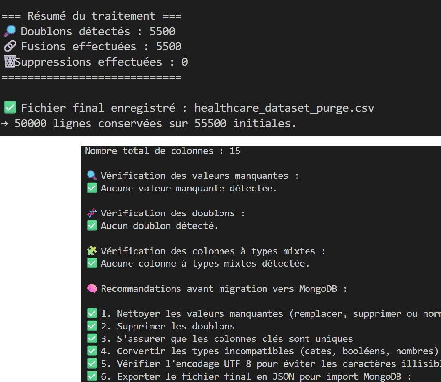

Migration de données vers NoSQL
Mise en œuvre: import CSV vers MongoDB avec scripts paramétrables (URI/DB/collection) et mode dry-run
Valeur ajoutée: réduction du risque de migration en production grâce à une chaîne testable
Migrer un jeu de données médicales CSV vers MongoDB avec nettoyage, contrôles d'intégrité, tests et routines d'analyse

Mise en œuvre: import CSV vers MongoDB avec scripts paramétrables (URI/DB/collection) et mode dry-run
Valeur ajoutée: réduction du risque de migration en production grâce à une chaîne testable
Mise en œuvre: détection/suppression des doublons, contrôles d'intégrité, conversion rigoureuse des types
Valeur ajoutée: meilleure confiance dans les analyses post-migration
Mise en œuvre: scripts réutilisables, tests pytest/mongomock, exécution Docker Compose
Valeur ajoutée: déploiement plus simple et reproductible entre environnements
Mise en œuvre: création de comptes dbOwner/read-only, vérification des permissions en écriture/lecture
Valeur ajoutée: limitation des risques d'usage non conforme des données médicales
Mise en œuvre: routines d'agrégation MongoDB (hôpitaux, pathologies, médicaments, groupes sanguins)
Valeur ajoutée: exploitation immédiate des données à des fins décisionnelles
Migrer un jeu de données médicales CSV vers MongoDB avec nettoyage, contrôles d'intégrité, tests et routines d'analyse
Scripts de migration/qualité, collection MongoDB alimentee, routines d'agregation, tests pytest/mongomock, variante Docker